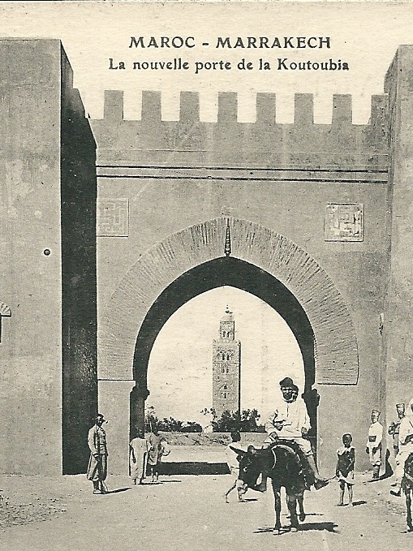
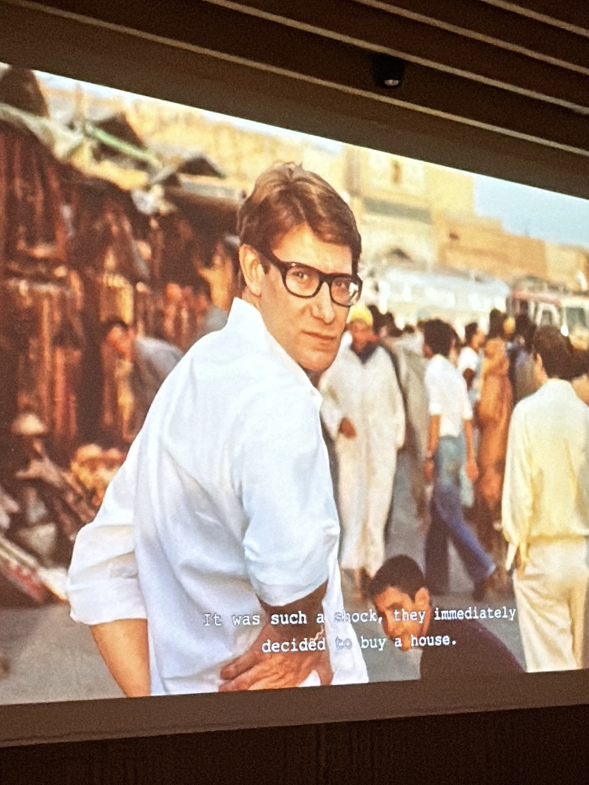
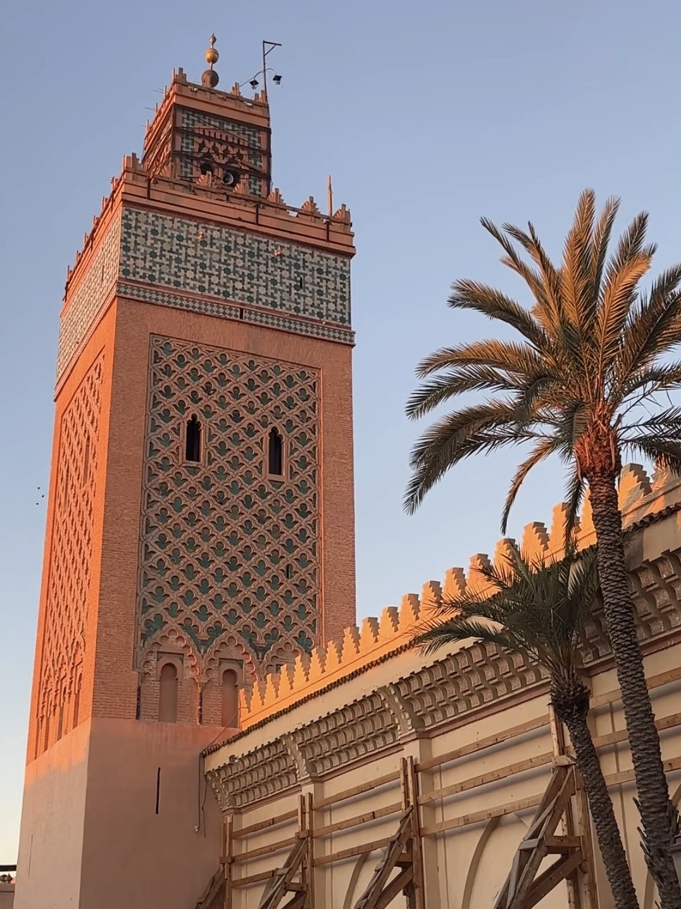
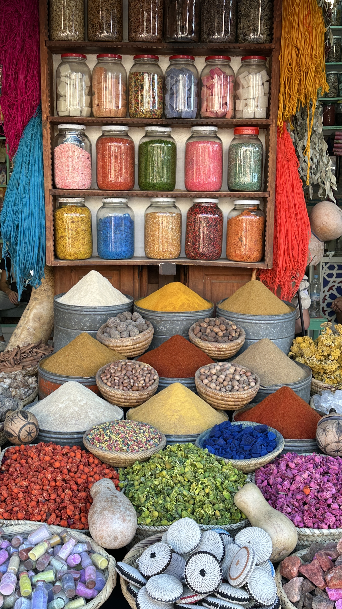

Hiver au Maroc
An evening of quiet warmth and timeless company
to share the holiday season.
Haus25 · 20 décembre
RSVP fermé. Merci d’avoir partagé cette soirée avec nous.
RSVP is now closed. Thank you for being with us.
An evening of quiet warmth and timeless company
to share the holiday season.
Haus25 · 20 décembre
RSVP fermé. Merci d’avoir partagé cette soirée avec nous.
RSVP is now closed. Thank you for being with us.
A celebration of light and stillness, inspired by Marrakech courtyards, candlelit salons, and the quiet elegance of winter evenings in the desert. Every detail is imagined to evoke warmth, intimacy, and the timeless rhythm of Moroccan nights.




A winter evening touched with Moroccan charm - candlelight, spice, and the warmth of friends. Expect dates, saffron, fleur d’oranger, and the hush of the desert drifting through the air, with maroon tones echoing Yves Saint Laurent’s Marrakech salons at Villa Oasis. Your presence completes the table.